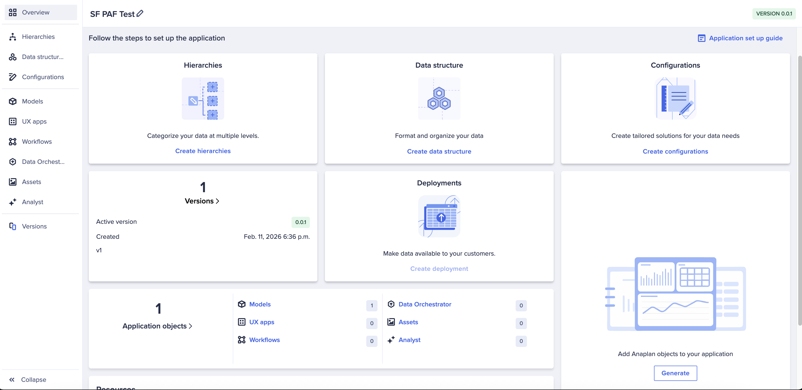
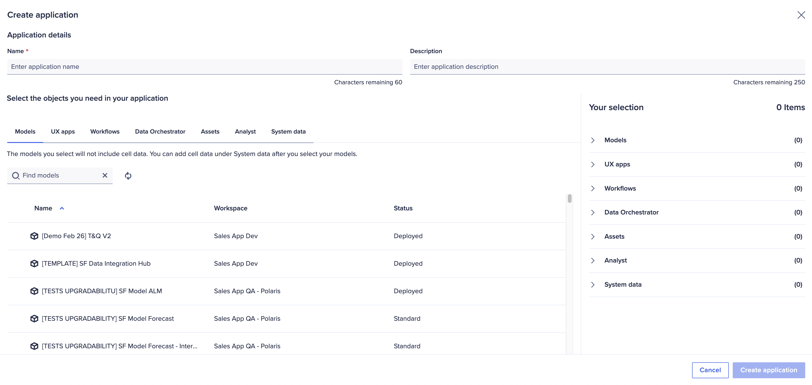
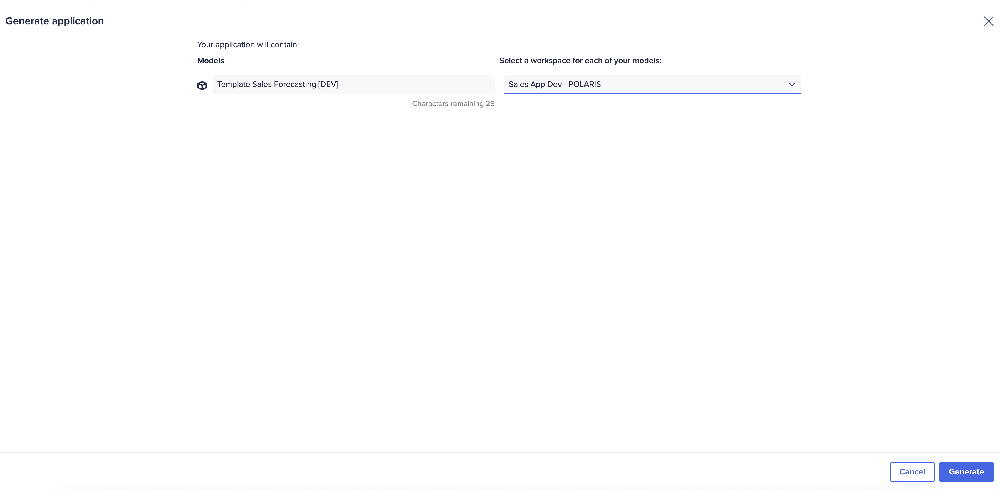
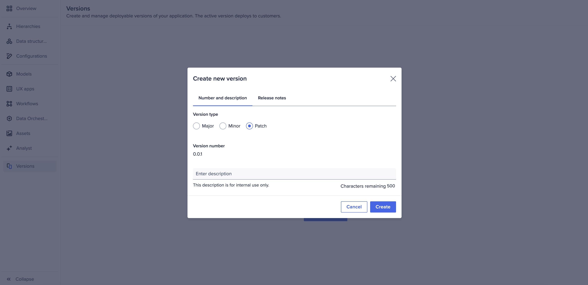
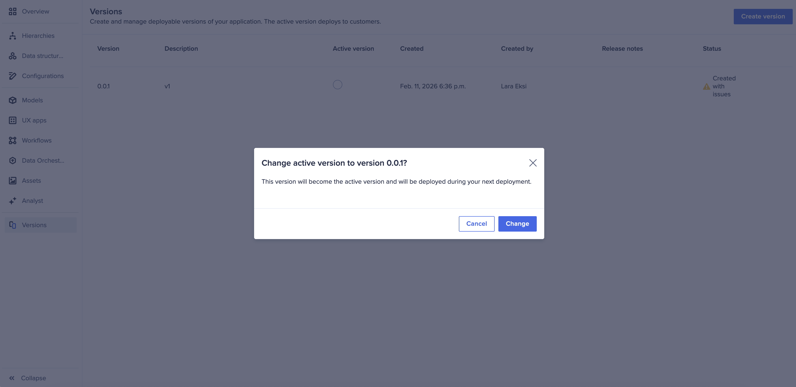
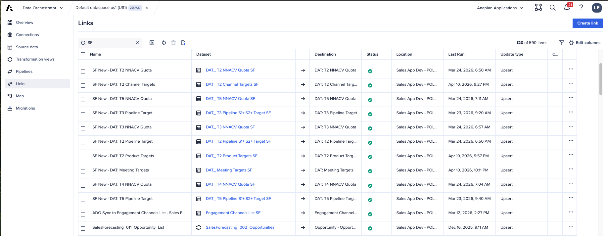

Sales Forecasting Deployment Model
How the app is delivered via the Anaplan Application Framework
If you've already worked through T&Q, Segmentation, and Capacity, you've internalized a specific mental model: open the configurator, answer structured questions, click Generate, the app is born. Sales Forecasting V1 does not work that way. It's delivered via the Anaplan Application Framework — the platform's standard application packaging and deployment surface. This page walks through what that means in practice.
Sales Forecasting V1 is delivered as a packaged application via the Anaplan Application Framework. There is no per-implementation configurator UI like T&Q's 1.01 Data Hub Setup or Segmentation's wizard. You assemble an application from objects (models, UX apps, workflows, data orchestrator pipelines), version it, and deploy it. That's the model — and it's a meaningful departure from the other three apps.
The Application Framework Surface
The Application Framework is the platform area where applications are built, versioned, and deployed. Every SF implementation starts from this overview screen.

The left-hand navigation organizes the building blocks of an application:
- Hierarchies — the master hierarchies that anchor the app (see Sample Data)
- Data structure — the data shapes the app expects to ingest
- Configurations — packaged configuration sets that can be reused across deployments
- Models — the underlying Anaplan models that hold the business logic
- UX apps — the published UX surfaces (the pages users see)
- Workflows — orchestrated business processes (forecast submission, approval, etc.)
- Data Orchestrator — the integration pipelines feeding the app
- Versions — versioned snapshots of the application that can be activated and deployed
1. Assemble the Application
The first step is composing the application — naming it and picking the objects it contains. The Create Application dialog lets you select Models, UX apps, Workflows, Data Orchestrator pipelines, Assets, Analyst content, and System data into a single packaged application.

Once the objects are selected, the Generate application step actually creates the application bundle and assigns each model to a target workspace.

2. Version the Application
Applications are versioned. You create a version (Major / Minor / Patch), attach a description and release notes, and the version is then available to activate.

The Versions screen lists every version of the application with its active state, creation date, owner, and any release-notes issues. Activating a version makes it the one that gets pushed to customers on the next deployment.

3. Deploy
The final step is deployment. Once an active version is set, the Deployments tile on the overview page makes that version available to downstream customer workspaces. This is the moment the app becomes visible to the end-user personas: AEs, managers, Sales Ops, sales leadership.
Because deployment goes through the platform's Application Framework rather than a one-off configurator, every SF rollout inherits the framework's guarantees: versioning, rollback to a prior active version, packaged deployments to multiple downstream tenants, and clear separation between the application bundle and the data the bundle reads. This is the value of the templated-application model — it's reusable across customers in a way a per-implementation configurator is not.
The Salesforce Connector (V1 Reference Integration)
The V1 reference integration is built around Salesforce as the CRM. The connector handles the heavy lifting: opportunities, accounts, opportunity-line-items, and activity sync flow in via a pre-configured Salesforce → Anaplan Data Orchestrator (ADO) pipeline.
| SF Object | Anaplan Target | Notes |
|---|---|---|
| Account | Account hierarchy + master | Maps to account hierarchy. Parent account field drives rollup. |
| Opportunity | Opportunities module | Stage, amount, close date, owner, account. Forecast type derived from stage probability. |
| OpportunityLineItem | Product hierarchy mapping | For product-level forecasting (optional but recommended). |
| User | Sales hierarchy leaves | Salesforce User → Anaplan Employee. Manager field drives org structure. |
| Activity / Event / Task | Activity feeds | Drives the activity-based pipeline analytics. |
Data Orchestrator Pipelines
The Data Orchestrator (ADO) holds the Links between source data and the Anaplan models. For a Salesforce-sourced implementation, the SF Templates ship with pre-built Links for the key inputs — quotas, channel targets, products, meetings, engagements, etc. The screenshot below shows the Links view from the SF Data Integration Hub.

Non-Salesforce CRM (Custom ADO Path)
For customers on HubSpot, Microsoft Dynamics, NetSuite, or a custom CRM, the data shape is the same but the pipeline is bespoke. You build custom ADO Links to the source system, transform into the same target structures, and the rest of the application works identically.
Add roughly 40–80 hours of implementation effort for the custom ADO pipeline depending on source system maturity. The model itself does not change; only the Links layer in the Data Orchestrator does. Confirm in discovery whether the customer has clean opportunity-level data with a stable identifier — that's the single biggest factor in pipeline effort.
Deployment Pre-flight Checklist
- All five master hierarchies imported, validated, and matched to CRM IDs
- Salesforce Connector (or custom ADO Links) tested end-to-end with sample opportunities
- At least 24 months of closed-won actuals loaded for Forecaster training
- NNACV targets entered per rep × quarter
- Weekly pipeline snapshot job scheduled
- Sales Hierarchy leaves verified as individual employees (not positions)
- Workspace permissions and user provisioning aligned with the sales hierarchy
- Application version created, release notes filled in, and activated
- UAT cohort identified (1 rep + 1 manager + 1 Sales Ops user, minimum)
Open the Anaplan Application Framework in your partner workspace and locate the SF templated app. Click through the five surfaces shown above — Application Framework overview, Create application, Generate application, Create new version, Versions list. Internalizing this loop is the cleanest way to understand how SF is delivered.